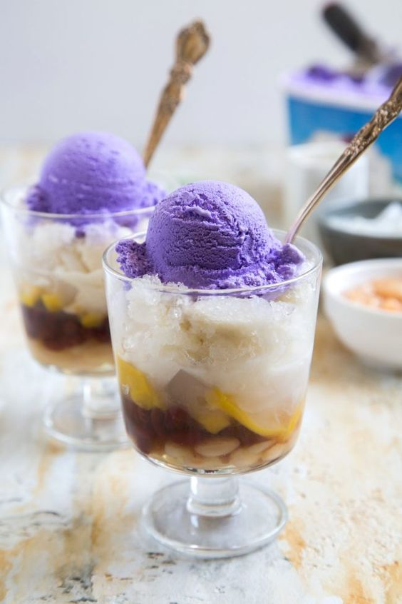

THE BEST HALO-HALO

- Ingredients:
- Shaved ice
- Sweetened beans
- Fruits (such as jackfruit, kaong, and coconut)
- Milk
- Ice cream (optional)
- Instructions:
- Fill a glass with shaved ice.
- Add sweetened beans, fruits, and milk.
- Top with ice cream if desired.
- Mix well and serve immediately.
Halo-halo is a Filipino dessert made with shaved ice, sweetened beans, fruits, and milk. It's a refreshing and delicious dessert that's perfect for hot summer days.
RETURN HOME